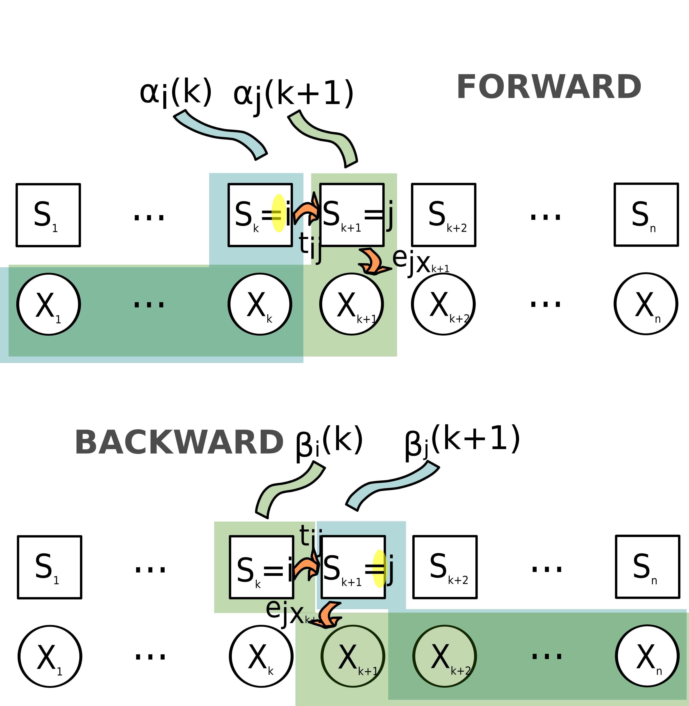

Attachement du package : 'dplyr'Les objets suivants sont masqués depuis 'package:stats':
filter, lagLes objets suivants sont masqués depuis 'package:base':
intersect, setdiff, setequal, union
Attachement du package : 'dplyr'Les objets suivants sont masqués depuis 'package:stats':
filter, lagLes objets suivants sont masqués depuis 'package:base':
intersect, setdiff, setequal, unionThe Baum–Welch algorithm is used to find the unknown parameters \(\theta = (T,E,\pi)\) of a HMM, which maximizes the probability of the observation series.
\[ \widehat\theta = \max_{\theta} pr(X/\theta) \]
Let’s consider random initial values (or values set according to prior knowledge) for \(\theta\): \(\theta_0 = (T_0, E_0, \pi)\).

Forward procedure
\[ \alpha_i(k)=pr(X_1=x_1,...,X_k=x_k,S_k=i/\theta) \]
is the probability of getting the “beginning” of the observation series \(x_1,x_2,...,x_k\) and having \(i\) as ending state (at time \(k\)) given parameters \(\theta\).
\(\alpha_i(k)\) is calculated recursively, with: \[ \alpha_i(1)=\pi_i e_{ix_1}\\ \alpha_j(k+1)=e_{jx_{k+1}} \sum_{i=1}^{n_S}\alpha_i(k) t_{ij} \]
Indeed, the probability of the series \(x_1,x_2,...,x_k+1\) and state \(j\) at time \(k+1\) is the probability that (considering all possible states \(i\) at time \(k\)):
Backward procedure
\[ \beta_i(k)=pr(X_{k+1}=x_{k+1},...,X_n=x_n/S_k=i,\theta) \] is the probability of getting the “ending” of the observation series \(x_{k+1},...,x_{n}\) and \(i\) as starting state (at time \(k\)) given parameters \(\theta\).
\(\beta_i(k)\) is calculated recursively, with: \[ \beta_i(T)=1\\ \beta_i(k)=\sum_{j=1}^{n_S} \beta_j(k+1)t_{ij}e_j(x_{k+1}) \]
Indeed, the probability of the series \(x_{k},x_{k+1},...,x_n\) and state \(i\) at time \(k\) is the probability that (considering all possible states \(j\) at time \(k+1\)):
The forward and backward procedures are illustrated in figure Figure 2.1.
We can now calculate the probability of being in state \(i\) at time \(k\) given the observed sequence \(X\) and parameters \(\theta\), \(\gamma_i(k)=pr(S_k=i/X,\theta)\).
Indeed, according to Bayes’s formula,
\[ pr(S_k=i/X,\theta)=\frac{pr(X,S_k=i/\theta)pr(\theta)}{pr(X,\theta)} \]
\[ =\frac{pr(X,S_k=i/\theta)pr(\theta)}{pr(X/\theta)pr(\theta)} \] \[ =\frac{pr(X,S_k=i/\theta)}{pr(X/\theta)} \tag{2.1}\]
and we have
\[ pr(X,S_k=i/\theta) = pr(X_1,X_2,....X_k,S_k=i/\theta)* pr(X_{k+1},X_{k+2},....X_n,S_{k+1}=j/\theta) \]
\[ = \alpha_i(k)\beta_i(k) \tag{2.2}\]
Summing this probability for all possible states at time \(k\) we get:
\[ pr(X/\theta) = \sum_{m=1}^{n_S}pr(X,S_k=m)/\theta) \]
\[ = \sum_{m=1}^{n_S}\alpha_m(k)\beta_m(k) \tag{2.3}\]
Hence with results Equation 2.2 and Equation 2.3 we can simplify equation Equation 2.1 into:
\[ \gamma_i(k) = pr(S_k=i/X,\theta) \] \[ = \frac{\alpha_i(k)\beta_i(k)} {\sum_{m=1}^{n_S}\alpha_m(k)\beta_m(k)} \] We can now calculate the probability of being in state \(i\) at time \(k\) given the observed sequence \(X\) and parameters \(\theta\), \(\gamma_i(k)=pr(S_k=i/X,\theta)\).
The probability of being in state \(i\) and \(j\) at times \(k\) and \(k+1\) respectively given the observed sequence \(X\) and parameters \(\theta\), \(\xi_{ij}(k)=pr(S_k=i,S_{k+1}=j/X,\theta)\).
Indeed, according to Bayes’s formula
\[ pr(S_k=i,S_{k+1}=j/X,\theta)=\frac{pr(X,S_k(i),S_{k+1}=j/\theta)pr(\theta)}{pr(X,\theta)} \]
\[ =\frac{pr(X,S_k(i),S_{k+1}=j/\theta)pr(\theta)} {pr(X/\theta)pr(\theta)} \] \[ =\frac{pr(X,S_k(i),S_{k+1}=j/\theta)} {pr(X/\theta)} \tag{2.4}\]
and we can reformulate the probability of observations and successive states at times \(k\) and \(k+1\) the following way:
\[ pr(X,S_k=i,S_{k+1}=j)/\theta) = pr(X_1,X_2,...,X_k, S_k=i/\theta)* pr(X_{k+1}, S_k=i, S_{k+1}=j/\theta)*pr(X_{k+2},X_{k+3},...,X_n, S_k+1=j/\theta) \]
\[ = \alpha_i(k)t_{ij}e_{jx_{k+1}}\beta_j(k+1) \tag{2.5}\]
Hence with results Equation 2.5 and Equation 2.3 we can simplify equation Equation 2.4 into:
\[ \xi_{ij}(k) = pr(S_k=i,S_{k+1}=j/X,\theta) \]
\[ = \frac{\alpha_i(k)t_{ij}e_{jx_{k+1}}\beta_j(k+1)} {\sum_{m=1}^{n_S}\alpha_m(k)\beta_m(k)} \]
The expected frequency spent in state i at time 1 is: \[ \widehat{\pi_i} = \gamma_i(1) \]
The expected transition probability from state \(i\) to state \(j\) is equal to the expected frequency of states \(i\) and \(j\) at two successive times, divided by the expected frequency of state \(i\).
\[ \widehat{t_{ij}}=\frac{\sum^{n-1}_{k=1}\xi_{ij}(k)}{\sum^{n-1}_{k=1}\gamma_i(k)} \]
The expected emission frequency of outcome \(x\) from state \(i\) is equal to the frequency of state i and outcome \(x\) occurring at the same time over the expected frequency of state \(i\).
\[ \widehat{e_{ix}}=\frac{\sum^n_{k=1} 1_{X_k=x} \gamma_i(k)}{\sum^n_{k=1} \gamma_i(k)} \]
As a consequence, based on \(X\) and \(\theta_0\) (corresponding to the initial transition and emission probabilities), we can calculate and expected value \(\hat\theta\) (corresponding to transition and emission probabilities that are consistent both with observations and hypothesized values of \(\theta\)).
This process is repeated until a desired level of convergence, i.e. until\(|\hat\theta-\theta|\) is below a certain threshold. Indeed, the lower \(|\hat\theta-\theta|\), the closer \(\hat\theta\) is to a local optimum for \(\theta\). Note that the algorithm does not guarantee a global maximum.
Let’s go back to the wood occurrence series. We will use the Baum-Welch algorithm to fit a HMM with two hidden states, H and L, defined as “High occurrence frequency state” and “Low occurrence frequency state”. To do this, we will use the function “baumWelch” from the “HMM” R package.
library(HMM)As we have seen, the Baum-Welch algorithm iteratively adjusts the parameter values \(\theta\) to maximize likelihood. Thus we have to initialize the algorithm with a prior estimate of \(\theta\).
We could, for instance, consider that the two states we are interested in are not very contrasted (let’s talk of uncontrasted states -UCS- from now on), and that transition probabilities are quite low (low transition probabilities: LTP). Here, we will hence consider that the H state is characterized by +5% chances of getting wood, and the L state is characterized by -5% chances of getting wood (compared to the overal frequency of 46.81%).
Thus we can write the “UCS” emission matrix this way:
M_UCS=matrix(c(1-(pw-0.05),1-(pw+0.05),pw-0.05,(pw+0.05)),2)
rownames(M_UCS)=c("L","H")
colnames(M_UCS)=c("nothing","wood")
print(round(M_UCS,2)) nothing wood
L 0.58 0.42
H 0.48 0.52We will also consider that at each time, there is only 10% chances to change from state L to state H, or from state H to state L.
Thus we can write the “LTP” transition matrix this way:
M_LTP=matrix(c(.9,.1,.1,.9),2)
rownames(M_LTP)=c("L","H")
colnames(M_LTP)=c("L","H")
print(M_LTP) L H
L 0.9 0.1
H 0.1 0.9The initialization of the HMM is done through:
initial_HMM=initHMM(States=c("L","H"),
Symbols=c("nothing","wood"),
transProbs=M_LTP,
emissionProbs=M_UCS)
print(initial_HMM)$States
[1] "L" "H"
$Symbols
[1] "nothing" "wood"
$startProbs
L H
0.5 0.5
$transProbs
to
from L H
L 0.9 0.1
H 0.1 0.9
$emissionProbs
symbols
states nothing wood
L 0.5819149 0.4180851
H 0.4819149 0.5180851i.e. the states (L or H), and outcomes (“nothing” or “wood”) are defined, and initial values are set to the transition and emission matrices.
The various elements of the object initial_HMM can be accessed (as is the usual way with R lists) through:
names(initial_HMM)[1] "States" "Symbols" "startProbs" "transProbs"
[5] "emissionProbs"print(initial_HMM$emissionProbs) symbols
states nothing wood
L 0.5819149 0.4180851
H 0.4819149 0.5180851Then the optimization can be carried out through:
hmm_fit_1= baumWelch(initial_HMM,obsWood,maxIterations=100)
print(hmm_fit_1)$hmm
$hmm$States
[1] "L" "H"
$hmm$Symbols
[1] "nothing" "wood"
$hmm$startProbs
L H
0.5 0.5
$hmm$transProbs
to
from L H
L 0.9151896 0.08481042
H 0.1010682 0.89893176
$hmm$emissionProbs
symbols
states nothing wood
L 0.89814860 0.1018514
H 0.08898919 0.9110108
$difference
[1] 2.066096e-01 3.033430e-01 1.627027e-01 6.527756e-02 2.941533e-02
[6] 1.453277e-02 7.758297e-03 4.420073e-03 2.671842e-03 1.698925e-03
[11] 1.121976e-03 7.599168e-04 5.228788e-04 3.632509e-04 2.538315e-04
[16] 1.780077e-04 1.251125e-04 8.805983e-05 6.203723e-05 4.373093e-05
[21] 3.083901e-05 2.175362e-05 1.534776e-05 1.082969e-05 7.642364e-06
[26] 5.393471e-06 3.806534e-06 2.686619e-06 1.896241e-06 1.338409e-06
[31] 9.446910e-07 6.667992e-07 4.706559e-07 3.322112e-07 2.344913e-07
[36] 1.655162e-07 1.168302e-07 8.246518e-08 5.820851e-08 4.108684e-08
[41] 2.900142e-08 2.047085e-08 1.444951e-08 1.019930e-08 7.199249e-09
[46] 5.081653e-09 3.586915e-09 2.531860e-09 1.787129e-09 1.261470e-09
[51] 8.904208e-10According to how we initialize the HMM, we could get different results… Indeed, the Baum-Welch algorithm converges to a local solution which might not be the global optimum (i.e., according to the initial values of the matrices, we could get different results).
Hence, let us consider different initial parameterizations. In our first example we had considered states that were quite uncontrasted (there was only +10% chances of observing some wood in state H compared to state L). Alternatively, we could consider quite contrasted states (e.g. with +40% chances of observing some wood in state H compared to state L):
M_CS=matrix(c(1-(pw-0.40),1-(pw+0.40),pw-0.40,(pw+0.40)),2)
rownames(M_CS)=c("L","H")
colnames(M_CS)=c("nothing","wood")
print(round(M_CS,2)) nothing wood
L 0.93 0.07
H 0.13 0.87In our first example we also considered that there were few chances to change from one state from another, i.e. we used low transition probabilities. Alternatively, we could consider higher transition probabilities (HTP):
M_HTP=matrix(c(.5,.5,.5,.5),2)
rownames(M_HTP)=c("L","H")
colnames(M_HTP)=c("L","H")
print(M_HTP) L H
L 0.5 0.5
H 0.5 0.5Let’s initialize our HMM in various ways with matrices M_LTP vs M_HTP for transition probabilities and M_CS vs M_UCS for emission probabilities (i.e. 4 possibilities):
# FIRST CASE: starting from M_LTP and M_UCS
hmm_init_LTP_UCS = initHMM(c("L","H"),c("nothing","wood"),
transProbs=M_LTP,
emissionProbs=M_UCS)
# SECOND CASE: starting from M_LTP and M_CS
hmm_init_LTP_CS = initHMM(c("L","H"),c("nothing","wood"),
transProbs=M_LTP,
emissionProbs=M_CS)
# THIRD CASE: starting from M_HTP and M_UCS
hmm_init_HTP_UCS = initHMM(c("L","H"),c("nothing","wood"),
transProbs=M_HTP,
emissionProbs=M_UCS)
# FOURTH CASE: starting from M_HTP and M_CS
hmm_init_HTP_CS = initHMM(c("L","H"),c("nothing","wood"),
transProbs=M_HTP,
emissionProbs=M_CS)
list_hmm_init=list(hmm_init_LTP_UCS,
hmm_init_LTP_CS,
hmm_init_HTP_UCS,
hmm_init_HTP_CS)Now the HMM are fitted (with various initial parameterizations):
hmm_fit_LTP_UCS= baumWelch(hmm_init_LTP_UCS,obsWood)$hmm
hmm_fit_LTP_CS= baumWelch(hmm_init_LTP_CS,obsWood)$hmm
hmm_fit_HTP_UCS= baumWelch(hmm_init_HTP_UCS,obsWood)$hmm
hmm_fit_HTP_CS= baumWelch(hmm_init_HTP_CS,obsWood)$hmm
list_hmm_fit=list(hmm_fit_LTP_UCS,
hmm_fit_LTP_CS,
hmm_fit_HTP_UCS,
hmm_fit_HTP_CS)Here are the transition matrices we get in the four cases:
print(round(hmm_fit_LTP_UCS$transProbs,2)) to
from L H
L 0.92 0.08
H 0.10 0.90print(round(hmm_fit_LTP_CS$transProbs,2)) to
from L H
L 0.92 0.08
H 0.10 0.90print(round(hmm_fit_HTP_UCS$transProbs,2)) to
from L H
L 0.92 0.08
H 0.10 0.90print(round(hmm_fit_HTP_CS$transProbs,2)) to
from L H
L 0.92 0.08
H 0.10 0.90Here are the emission matrices we get in the four cases:
print(round(hmm_fit_LTP_UCS$emissionProbs,2)) symbols
states nothing wood
L 0.90 0.10
H 0.09 0.91print(round(hmm_fit_LTP_CS$emissionProbs,2)) symbols
states nothing wood
L 0.90 0.10
H 0.09 0.91print(round(hmm_fit_HTP_UCS$emissionProbs,2)) symbols
states nothing wood
L 0.90 0.10
H 0.09 0.91print(round(hmm_fit_HTP_CS$emissionProbs,2)) symbols
states nothing wood
L 0.90 0.10
H 0.09 0.91In this particular case, we have obtained the same fits with all initial parameterizations (which is actually reassuring as it implies that the optimum we get is a “not-so-local” optimum).
But if we had provided the Baum-Welch algorithm with a very different initial transition matrix (“VHTP” for “Very High Transition Probabilities”), e.g.
M_VHTP=matrix(c(.1,.9,.9,.1),2)
rownames(M_VHTP)=c("L","H")
colnames(M_VHTP)=c("L","H")
print(M_VHTP) L H
L 0.1 0.9
H 0.9 0.1hmm_init_VHTP_UCS = initHMM(c("L","H"),c("nothing","wood"),
transProbs=M_VHTP,
emissionProbs=M_UCS)
hmm_fit_VHTP_UCS= baumWelch(hmm_init_VHTP_UCS,obsWood)$hmmthen we would have got the following fit:
hmm_fit_VHTP_UCS$transProbs to
from L H
L 0.1005015 0.8994985
H 0.8992563 0.1007437hmm_fit_VHTP_UCS$emissionProbs symbols
states nothing wood
L 0.5319157 0.4680843
H 0.5319141 0.4680859This is actually a very peculiar way to initialize the transition matrix as it assumes that there are more chances of changing states at each time than of staying in the same state. With this parameterization, chances are the series of states is basically a succession of “L”-“H”-“L”-“H”-“L”-“H”… so that the two states are naturally quite uncontrasted in terms of outcome probabilities.